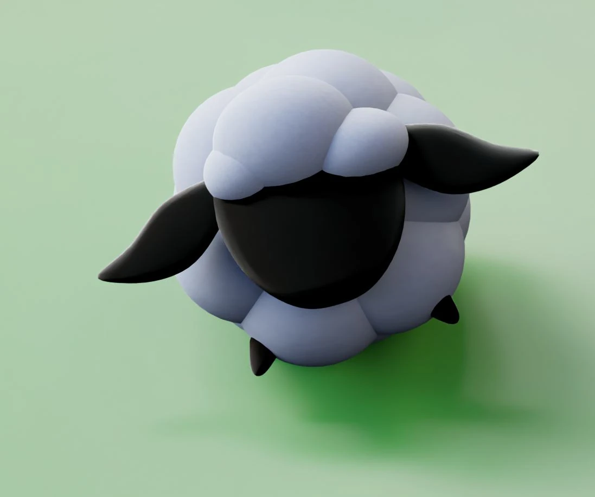
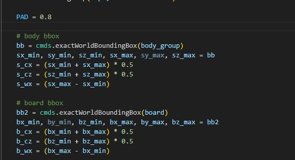
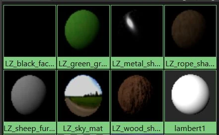

Case Study · February 2026
Newton’s Cradle
A fully scripted Maya scene combining modular character construction, automatic alignment, procedural shading, and seamless expression-driven motion.
RoleProcedural Animation
ToolsPython · Maya
DateFebruary 2026
A scene generated from modular functions
Separate Python functions build bodies, heads, hair, legs, frames, grass, lights, shaders, cameras, and render settings. A single main function assembles the final scene.


Bounding-box-driven placement
World-space bounding boxes measure character and support geometry. Their extents determine proportional scale and centered placement without manual offsets.
A mathematically seamless loop
Sine expressions use a configurable total frame count. Completing one full sine cycle across the range guarantees that the end state returns to the start state.
Parameterized character behavior
Reverse and single parameters control direction and whether a character includes the swing structure. Procedural Arnold shaders combine Standard Surface, noise, and ramp nodes without image textures.
